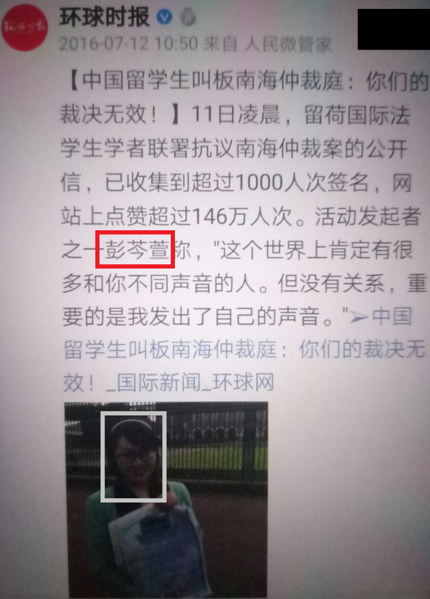

主要事迹 推特送马  待补充 线下送马
待补充 线下送马  基础信息 档案编号 SCP-ZHINA-2019-52 所属阵营 精赵 翻墙粪蛆 墙外蛆 名言警句 留学归国人员，从事法律领域研究与实务。 捍卫祖国荣誉与利益，维护国家主权与领土完整，与港独台独疆独藏独势力战斗到底！🇨🇳 不承诺不进行辱骂。 照片 真实姓名 彭芩萱 身份证号 430105198706257427 生日 19870625 家庭住址 湖南省长沙市开福区动物园宿舍2栋201室 手机号 15973180625 学校 武汉大学
基础信息 档案编号 SCP-ZHINA-2019-52 所属阵营 精赵 翻墙粪蛆 墙外蛆 名言警句 留学归国人员，从事法律领域研究与实务。 捍卫祖国荣誉与利益，维护国家主权与领土完整，与港独台独疆独藏独势力战斗到底！🇨🇳 不承诺不进行辱骂。 照片 真实姓名 彭芩萱 身份证号 430105198706257427 生日 19870625 家庭住址 湖南省长沙市开福区动物园宿舍2栋201室 手机号 15973180625 学校 武汉大学
(备注：法学院) 学校 Universiteit Utrecht (International Law)
(备注：威国乌特勒支大学，博士学位（2012年9月-2017年6月）) Twitter @baoweinanhai25
(备注：uid=1149615610734628867)
SCP-ZHINA-2019-52(彭芩萱)
录入：2026-09-26#人物 #文章